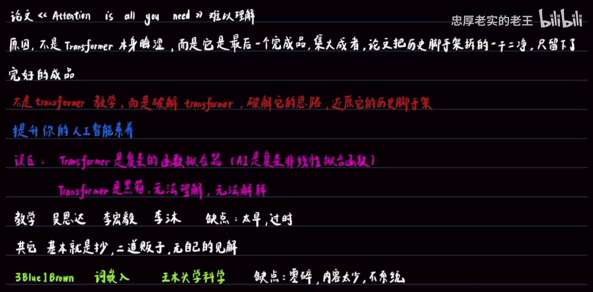
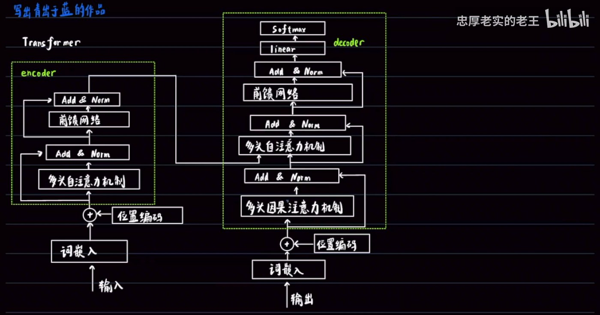
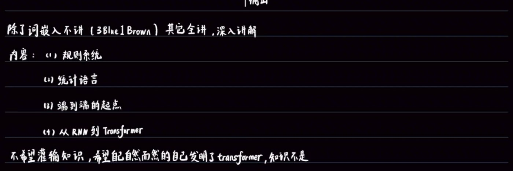
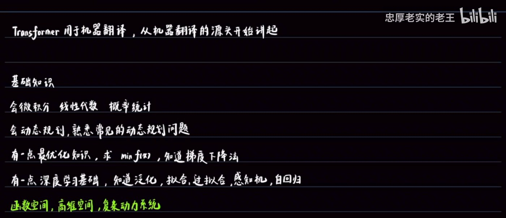

论文难懂，是因为「历史脚手架」被拆光了
这一讲不教你任何公式，只回答「为什么必须这样学」
建议先看视频，或对照下方笔记跳读
▶ 播放器无法加载时，可在 B 站直接观看。
先归因，再决定怎么讲
视频开篇先立一个判断：Transformer 是最成功的模型。但紧接着指出一个所有人都有的体验 —— 它背后的论文《Attention is all you need》难以理解。
关键在于对「难懂」的归因。UP 主给出的解释是：
这个判断直接决定了整个系列的讲法：
如此定位的落点是提升你的人工智能素养：理解一个模型是怎么被「逼」出来的，而不只是记住它长什么样。

本系列要拆掉的第一批「脚手架」
在进入正题前，UP 主先把两个常见的错误认知摆在台面上：
为什么现有材料不够用
既然要「破解」，就得先说明为什么现有材料不够用。UP 主对市面上的主流教程逐类做了评价：
| 教程来源 | 不足 |
|---|---|
| 吴恩达 / 李宏毅 / 李沐 | 太早，过时 |
| 其它（多数中文教程） | 基本就是抄，二道贩子，无自己的见解 |
| 3Blue1Brown、词嵌入类内容、王木大学科学 | 零碎，内容太少，不系统 |
先看一眼终点长什么样，再回头补路上的历史
有意思的是，第 1 讲就把完整的 Transformer 架构图手绘出来了 —— 先让你看一眼「终点长什么样」，再回头补路上的每一段历史。

注意板书用的是「多头因果注意力机制」这一说法，对应论文里的 Masked Multi-Head Attention：它保证解码时只能看到已生成的部分，不能偷看未来。
四阶段递进，除词嵌入外全讲
UP 主明确划定了范围：除了词嵌入不讲（3Blue1Brown 已讲），其它全讲，深入讲解。而整条主线是 —— Transformer 用于机器翻译，所以从机器翻译的源头开始讲起。

这一讲最值得记下来的一句话
这一讲最值得记下来的，其实是 UP 主对「怎么学」的主张。原话大意是：
这句话解释了为什么本系列要从「规则系统」这种看起来和 Transformer 毫无关系的地方讲起：只有沿着真实的历史演进走一遍，每个设计才会显得不得不如此，而不是凭空规定的。
门槛不高，但每一块都要「有一点」
最后，UP 主列出了学这个系列需要的前置基础：

| 类别 | 具体要求 |
|---|---|
| 数学基础 | 会微积分、线性代数、概率统计 |
| 算法 | 会动态规划，熟悉常见的动态规划问题 |
| 最优化 | 有一点最优化知识：求 min f(x)，知道梯度下降法 |
| 深度学习 | 有一点基础，知道泛化、拟合、过拟合、感知机、自回归 |
| 进阶视角 | 函数空间、高维空间、复杂动力系统（板书以绿色标出，属于加分项） |
本讲全部结论，可独立使用
| 问题 | 结论 |
|---|---|
| Transformer 的地位？ | 最成功的模型（开篇即定调） |
| 论文为什么难懂？ | 不是它本身晦涩，而是它是最后一个完成品，论文把历史脚手架拆得一干二净 |
| 本系列的做法？ | 不是「教学」，而是「破解」：破解思路，还原历史脚手架 |
| 要破除哪两个误区？ | ① 复杂的函数拟合器 ② 黑箱、无法理解、无法解释 |
| 现有教程的问题？ | 吴恩达/李宏毅/李沐太早过时；多数是二道贩子；3Blue1Brown 等零碎不系统 |
| 目标是什么？ | 写出青出于蓝的作品 |
| 从哪讲起？ | 机器翻译的源头（Transformer 用于机器翻译） |
| 四个阶段？ | 规则系统 → 统计语言 → 端到端的起点 → 从 RNN 到 Transformer |
| 什么不讲？ | 词嵌入（3Blue1Brown 已讲），其余全讲且深入讲解 |
| 核心教学理念？ | 不灌输知识，让你自然地「自己发明」Transformer；知识是内心长出来的 |
| 需要什么基础？ | 微积分/线代/概统、动态规划、最优化（梯度下降）、一点深度学习 |
本讲出现的关键概念
| 术语 | 说明 |
|---|---|
| 历史脚手架 | 本系列的核心比喻。指论文成文之前的探索路径与中间产物。论文作为「完成品」把这些全拆掉了，导致读者只看到结果、看不到动机。 |
| Attention is all you need | 提出 Transformer 的论文（2017，Google）。标题即主张：只要注意力机制就够了，不需要循环或卷积。 |
| 自注意力 | Self-Attention。序列内部每个位置与所有位置互相计算相关性，从而聚合全局信息。 |
| 多头注意力 | Multi-Head Attention。并行多组注意力，从不同子空间捕捉不同的关系模式。 |
| 多头因果注意力 | 板书用词，对应论文的 Masked Multi-Head Attention。位于 decoder 第一层，屏蔽未来位置，保证生成时不能「偷看」后面的词。 |
| Add & Norm | 残差连接（Add）加层归一化（Norm）。架构图中每个子层之后都接一次，用于稳定深层网络的训练。 |
| 前馈网络 | Feed-Forward Network。注意力子层之后的逐位置全连接网络。 |
| 位置编码 | Positional Encoding。注意力本身不含顺序信息，需把位置信息加到词嵌入上（图中以 ⊕ 表示相加）。 |
| 词嵌入 | Word Embedding。把 token 映射为向量。本系列明确不讲这一块。 |
| 自回归 | Autoregressive。用已生成的内容预测下一个 token，decoder 的生成方式即属此类。 |
| 感知机 | Perceptron。最基础的神经网络单元，属于先修知识中的深度学习部分。 |
| 过拟合 / 泛化 | 过拟合指模型记住了训练数据而失去推广能力；泛化指在未见数据上的表现。先修知识要求「知道」即可。 |
| 函数空间 / 高维空间 / 复杂动力系统 | 板书最后以绿色标出的进阶视角，属于理解深度学习的更高层框架，非硬性要求。 |
当前是第 1 讲